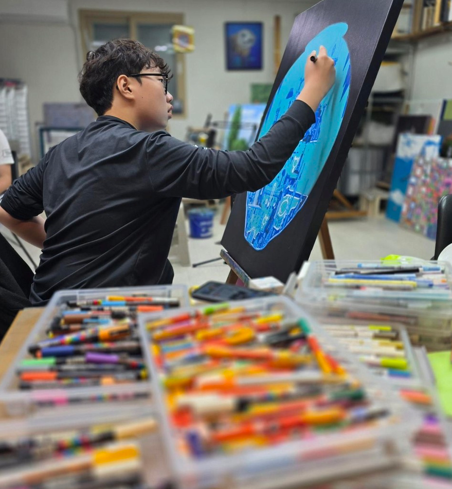
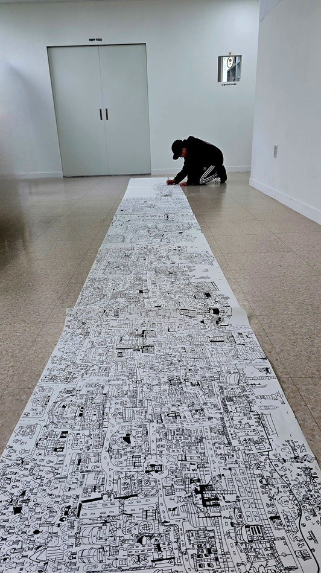
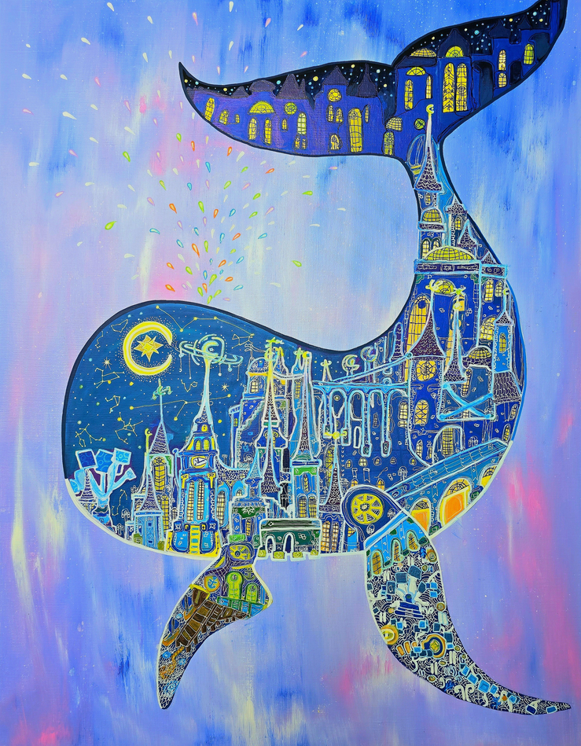

The Flatland Dream — 2025 Exhibition Recap

1. What is a food you find yourself eating often, like a habit? Some people call it a “soul food.”
Chicken – because it’s delicious. I like golden olive boneless yangnyeom chicken. It tastes good even if I eat it every day. The crispy outside, juicy inside, fried in clean oil, and the soft meat all come together in perfect harmony. I want to eat it right now.
2. What’s the thing that made you laugh the most recently?
When I pulled Silent Salt Cookie in Cookie Run: Kingdom, I was so excited that I started dancing automatically. I’ve collected every cookie except one in Cookie Run: Kingdom. I was very happy.
3. What is your favorite time of the day, and why?
After 5 PM, because school ends and I can finally rest. I love resting the most. I want to wear pajamas at home and just use my phone.
4. If you could go on a trip right now, where would you go?
I want to go glamping at Jirisan. I loved eating grilled samgyeopsal over charcoal with my family and roasting marshmallows. Swimming in the valley was fun too.
5. When you draw, is there a recurring theme or a little habit that shows up often?
I draw “Machine Island” a lot because to me it looks complicated and cool. In my head, it’s like machines are always running, and I keep picturing scenes like Machine Island.
6. What is your favorite season?
Summer – because I can go to water parks. And we only go glamping in the summer.
7. How did you feel when you saw Jeongmin’s collaborative artwork? I’d love to hear your thoughts after viewing it.
The rabbit was pretty. I liked it because it was drawn in a style similar to mine. The inside of the rabbit looked so peaceful, and that matched well with the rabbit.

1. 습관처럼 자주 먹게 되는 음식은 무엇인가요? 흔히 ‘소울 푸드’라고도 하죠.
치킨 - 맛있으니까 황금올리브 순살 양념치킨이 좋아요. 매일 먹어도 맛있고, 깨끗한 기름에 겉바속촉의 튀김, 그리고 부드러운 속살까지 완벽한 조화를 이루는 맛이지요. 지금도 먹고 싶어요.
2. 최근에 가장 크게 웃었던 일은 무엇이었나요?
쿠키런 킹덤에서 사일런트 솔트 쿠키를 뽑았을 때 정말 신나서 춤이 절로 나왔어요.
난 쿠키런 킹덤에 한 개 빼고 쿠키를 다 모았어요. 너무 신났어요.
3. 하루 중 가장 좋아하는 시간대는 언제이며, 그 이유는 무엇인가요?
5시 이후에 학교를 마치니까 쉴 수 있어서요. 난 쉴 때가 제일 좋아요. 집에서 잠옷 입고 핸드폰 하고 싶어서 입니다.
4. 만약 지금 당장 여행을 간다면 어디로 떠나고 싶나요?
지리산 글램핑장에 가고 싶어요. 지리산에서 가족들이랑 숯불에 삼겹살 먹는 거랑 마시멜로우 구워 먹는 것도 좋았어요. 계곡에서 수영하는 것도 좋았어요.
5. 그림을 그리다 보면 자꾸 등장하는 ‘단골 소재’나 ‘나만의 사소한 습관’이 있나요?
저는 기계섬을 자주 그리는데, 제 눈에는 복잡하고 멋있어 보여요. 제 머릿속에는 기계가 돌아가는 듯이 계속 기계섬 같은 모습이 떠올라요.
6. 좋아하는 계절은 무엇인가요?
여름 - 워터파크에 갈 수 있어서 좋아해요. 글램핑도 여름에만 하니까요.
7. 정민 학생의 협업 작품을 보았을 때 어떤 느낌이나 감정이 들었나요? 작품 감상 후기가 궁금합니다.
토끼가 예뻤어요. 나랑 비슷하게 그려서 마음에 들었어요. 토끼 안이 너무 평화로워 보이는 것이 토끼랑 어울렸어요.
